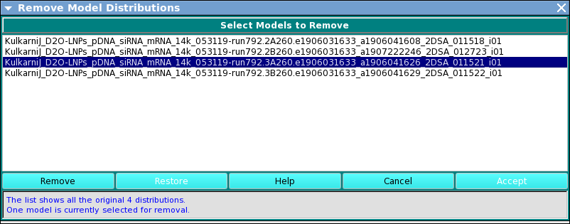

UltraScan Density Matching Remove Models:
An option in UltraScan III US_Density_Match,
this dialog allows the removal of previously selected model
distributions.
The dialog presents a list of models to be used in density
matching. One or more items in the list may be selected and a
Remove button clicked to pare down the list.
Main Window:

Dialog Items:
-
(List of Model Distributions) Select one or more of the
items in the list.
-
Remove Click this button to remove selected models.
-
Restore Click this button to restore the models list
to its original contents.
-
Help Click this button to display this help dialog.
-
Cancel Click this button to cancel the dialog and
leave the list of models in the same state as it was upon
entry.
-
Accept Exit this dialog and return with a modified
list of models.
 Manual
Manual